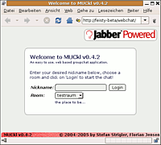
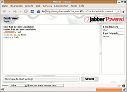

MUCkl
Archivierte Anleitung
Dieser Artikel wurde archiviert, da er - oder Teile daraus - nur noch unter einer älteren Ubuntu-Version nutzbar ist. Diese Anleitung wird vom Wiki-Team weder auf Richtigkeit überprüft noch anderweitig gepflegt. Zusätzlich wurde der Artikel für weitere Änderungen gesperrt.
Zum Verständnis dieses Artikels sind folgende Seiten hilfreich:
MUCkl  ist eine Webchat-Applikation auf XMPP (Jabber)-Basis. Das besondere ist, dass MUCkl komplett client-seitig in JavaScript implementiert ist. Man benötigt auf dem Server also weder eine Skriptsprache noch eine Datenbank - nur einen Apache-Server mit dem "mod_proxy"-Modul, welches standardmäßig mit installiert wird, und irgendeinen XMPP-Server, der sogenanntes HTTP-Polling oder HTTP-Binding aktiviert hat und bei dem man sich einen Benutzeraccount registrieren darf.
ist eine Webchat-Applikation auf XMPP (Jabber)-Basis. Das besondere ist, dass MUCkl komplett client-seitig in JavaScript implementiert ist. Man benötigt auf dem Server also weder eine Skriptsprache noch eine Datenbank - nur einen Apache-Server mit dem "mod_proxy"-Modul, welches standardmäßig mit installiert wird, und irgendeinen XMPP-Server, der sogenanntes HTTP-Polling oder HTTP-Binding aktiviert hat und bei dem man sich einen Benutzeraccount registrieren darf.
Die Verwaltung des Chatraums wird mit einem normalen XMPP-Client durchgeführt und bietet alle gewohnten Möglichkeiten eines XMPP-Gruppenchats.
Vorbereitungen¶
MUCkl benutzt XMPP-Gruppenchats als Technik im Hintergrund. Auf dem XMPP-Server müssen deswegen folgende Vorkehrungen getroffen werden:
Jabber-ID¶
Man benötigt eine Jabber-ID, [4] unter der die Webchat-Teilnehmer sich mit dem Gruppenchat verbinden. Diese kann man einfach auf einem beliebigen XMPP-Server mit Hilfe eines beliebigen Clients registrieren. Einzige Bedingung ist, dass der Server HTTP-Polling oder HTTP-Binding unterstützt. ejabberd bietet z.B. standardmäßig HTTP-Polling auf Port 5280.
Alle Webchat-Nutzer benutzen später dieselbe JID, mit jeweils anderer Ressource. Die mehrfache parallele Nutzung derselben JID funktioniert problemlos.
Achtung!
Da MUCkl komplett auf der Clientseite abläuft, steht das Passwort zu diesem XMPP-Zugang im Klartext im JavaScript-Code und kann von böswilligen Benutzern missbraucht werden, um bspw. unter der JID des Webchats Unfug zu treiben oder gar durch Ändern des Passworts den Service zu blockieren.
Um das zu verhindern, kann man ein anonymes Authentifizierungsprotokoll, wie bspw. "SASL Anonymous" (siehe unten) verwenden. Auch dieses Protokoll ist im ejabberd integriert, allerdings standardmäßig nicht aktiviert, weswegen man einige umfangreiche Anpassungen der Konfiguration vornehmen muss. Öffentliche XMPP-Server bieten meist kein "SASL Anonymous" an. Man benötigt also wahrscheinlich einen eigenen Server. Dafür kann man sich dann das Anlegen eines eigenen MUCkl-Accounts sparen.
Chatraum¶
Auch den Gruppenchatraum kann man sehr einfach mit Hilfe eines XMPP-Clients einrichten. Natürlich sollte der Raum persistent eingerichtet werden, so dass er auch nach dem Verlassen des Besitzers erhalten bleibt. Auf keinen Fall sollte die im vorigen Schritt eingerichtete JID des Webchats zur Erschaffung des Raums genutzt werden oder anderweitig Moderatoren-Rechte erhalten.
Webserver¶
Man benötigt natürlich noch einen funktionierenden Webserver [5] . Dieser braucht keine besonderen Fähigkeiten, außer einer Reverse-Proxy-Funktion. Im Falle des Apache-Servers wird diese Funktion vom Modul mod_proxy bereitgestellt. Der Apache-Server muss nicht unbedingt auf demselben Rechner wie der XMPP-Server laufen.
Installation¶
Als erstes muss man sich das aktuelle Tar-Archiv von der MUCkl-Homepage herunterladen. Da es komplett aus statischen HTML-Seiten und JavaScript-Dateien besteht, die ausschließlich auf dem Client-Rechner interpretiert werden, stellt das keinerlei Gefahr für den Server dar. Selbst wenn man normalerweise gegenüber Software von Drittanbietern eher skeptisch eingestellt ist.
eigener Webserver¶
Als erstes muss man das gepackte Verzeichnis MUCkl-<version>.tar.gz an einen geeigneten Ort entpacken [3]. Ein derartiger Ort ist z.B. das Verzeichnis /usr/local/share, wenn man /var/www nicht mit kompletten Software-Paketen vollstopfen will. Diese Vorgehensweise entspricht der der Ubuntu-Paket-Maintainer.
Nun muss man dieses Verzeichnis noch in die Apache-Konfiguration einbinden, indem man eine neue Datei in /etc/apache2/sites-available anlegt [2]. Das MUCkl-Verzeichnis und der Name des XMPP-Servers müssen natürlich angepasst werden.
# /etc/apache2/sites-available/muckl
Alias /webchat /usr/local/share/MUCkl-0.4.2
<Directory /usr/local/share/MUCkl-0.4.2>
AddDefaultCharset UTF-8
</Directory>
ProxyRequests Off
ProxyPass /webchat/http-poll/ http://jabber-server:5280/http-poll/
ProxyPassReverse /webchat/http-poll/ http://jabber-server:5280/http-poll/
<Proxy http://jabber-server:5280/http-poll/*>
Order deny,allow
Deny from all
Allow from all
</Proxy>Diese Direktiven sorgen dafür, dass das MUCkl-Verzeichnis in ein virtuelles /webchat-Verzeichnis auf dem Server eingeblendet wird und dass die XMPP-Kommunikation vom Client direkt an den XMPP-Server weitergeleitet wird.
Diese virtuelle Seite und die nötigen Proxy-Module müssen jetzt noch aktiviert und die Konfiguration des Apache-Servers danach neu geladen werden: [1]
sudo a2enmod proxy sudo a2enmod proxy_http sudo a2ensite muckl
Webspace beim Provider¶
Sofern der Provider das Proxy-Modul nicht deaktiviert hat, kann man MUCkl auch auf einfachem Webspace betreiben. Dazu muss man das entpackte MUCkl-Verzeichnis hochladen und eine .htaccess-Datei anlegen, die alles aus dem oben angegebenen Textblock enthält, außer der Alias-Direktive. Der Name des <Directory>-Blocks muss natürlich ebenfalls angepasst werden.
MUCkl-Konfiguration¶
Die MUCkl-Konfiguration findet in einer einzigen Datei statt, der config.js im MUCkl-Verzeichnis. Folgende Einstellungen sollte man dabei anpassen:
var BACKENDTYPE = 'polling'; var HTTPBASE = "http-poll/";
Man kann auch HTTP-Binding benutzen, was sogar besser als HTTP-Polling sein soll. Diese Anleitung geht aber davon aus, dass man den ejabberd als XMPP-Server benutzt, der Binding nur über ein kompliziert einzubindendes Zusatzmodul unterstützt. Die Aktivierung von Polling ist einfacher zu bewerkstelligen.
var XMPPDOMAIN = "jabber-server.tld"; // domain name of jabber service to be used var MUCKLJID = "muckl"; // username var MUCKLPASS = "n0t_s0_s3cr3t"; // password
Hier muss man den Domain-Namen des XMPP-Servers einstellen, (vollständig - nicht "localhost" o.ä.,) sowie den Namen und das Passwort des vorher angelegten Accounts.
var ROOMS =
[
{
name:'testraum',
description:'Hier eine Kurzbeschreibung eintragen',
server:'conference.jabber-server.irgendwo',
// Hier bei Bedarf Pfad zu einem gewünschten Logo eintragen und Kommentarzeichen entfernen:
// logo: 'http://zeank.darktech.org/spongebob.png'
}
];Ein paar Beispielräume sind schon vorkonfiguriert. Diese müssen natürlich angepasst werden. Man kann durchaus mehrere Räume - auch auf unterschiedlichen Servern - eintragen, die dann in einer Auswahlliste zur Verfügung gestellt werden.
var timerval = 500; // poll frequency in msec
Die voreingestellten 5000 Millisekunden Poll-Frequenz führen zu spürbaren Verzögerungen und sollten nur dann belassen so werden, wenn man nur eine sehr knappen Bandbreite zu Verfügung hat.
SASL Anonymous¶
Wer einen XMPP-Server nutzt, der "SASL Anonymous" unterstützt, (z.B. ejabberd,) kann dieses Protokoll nutzen, um die oben angesprochene Problematik mit den Klartextpasswörtern zu umgehen. Dazu ist neben der entsprechenden Konfiguration des XMPP-Servers nur eine einfache Anpassung der config.js-Datei aus dem MUCkl-Verzeichnis notwendig. Die Variablen für JID und Passwort werden auskommentiert und die vorhandene ANONHOST-Zeile aktiviert, wobei hier - ebenso wie bei der XMPPDOMAIN - der Servername des anonymen XMPP-Servers eingetragen werden muss.
var XMPPDOMAIN = "anonymous.jabber-server.tld"; // domain name of jabber service to be used var ANONHOST = "anonymous.jabber-server.tld"; // hostname of sasl anonymous service //var MUCKLJID = "muckl"; // username //var MUCKLPASS = "n0t_s0_s3cr3t"; // password
Benutzung¶
 Die Benutzung von MUCkl ist geradezu trivial. Auf der Eingangsseite wird man aufgefordert, einen Nicknamen zu wählen. Außerdem kann man einen Chatraum aus einer Auswahllliste wählen, sofern der Administrator mehrere Räume konfiguriert hat. Noch ein Klick auf "Login" und schon geht es los.
 Es öffnet sich die Chat-Oberfläche mit den drei typischen Bereichen für die Darstellung des Chats (links), die Teilnehmerliste (rechts) und die Eingabezeile (unten), die genauso funktioniert, wie man das erwartet und kennt. Worauf man vielleicht nicht auf Anhieb kommt ist, dass man per Klick auf einen Teilnehmer in der Liste auch private Nachrichten an diesen senden kann (wenn der Chatraum XMPP-seitig so konfiguriert wurde, dass das möglich sein soll). Ein erneuter Klick auf den Namen lässt die Eingaben wieder in den öffentlichen Raum gelangen.
Ganz am unteren Rand des Fensters kann man seinen XMPP-Status ändern und eine zugehörige Status-Meldung setzen. Zwei weitere Piktogramme schalten eine eher nervige Klanguntermalung ein bzw. sind für das Verlassen des Chatraums zuständig.
Themes und Lokalisierung¶
Wer das Aussehen oder die Sprache von MUCkl verändern will, kommt um ein wenig Handarbeit nicht herum. Die Datei muckl.css muss dafür verändert bzw. die betreffenden englischsprachigen Bezeichnungen in den HTML- und JavaScript-Dateien gesucht und ersetzt werden.
- Erstellt mit Inyoka
-
 2004 – 2017 ubuntuusers.de • Einige Rechte vorbehalten
2004 – 2017 ubuntuusers.de • Einige Rechte vorbehalten
Lizenz • Kontakt • Datenschutz • Impressum • Serverstatus -
Serverhousing gespendet von